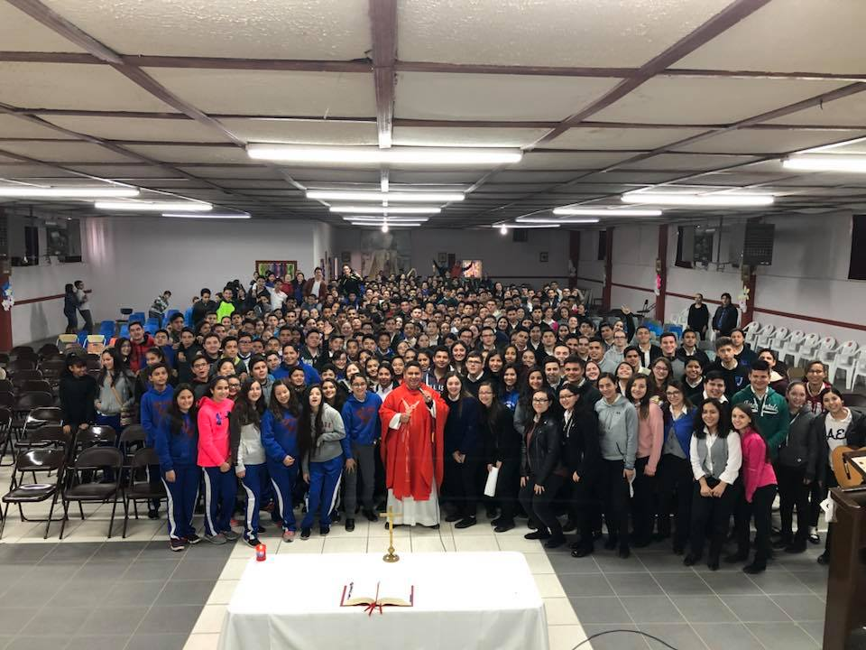
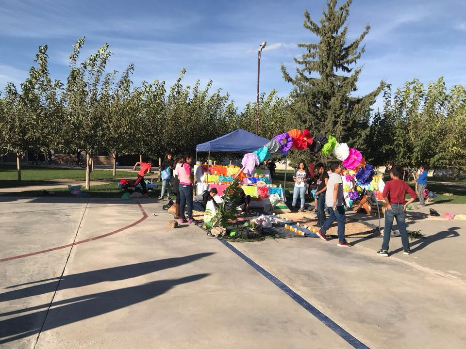
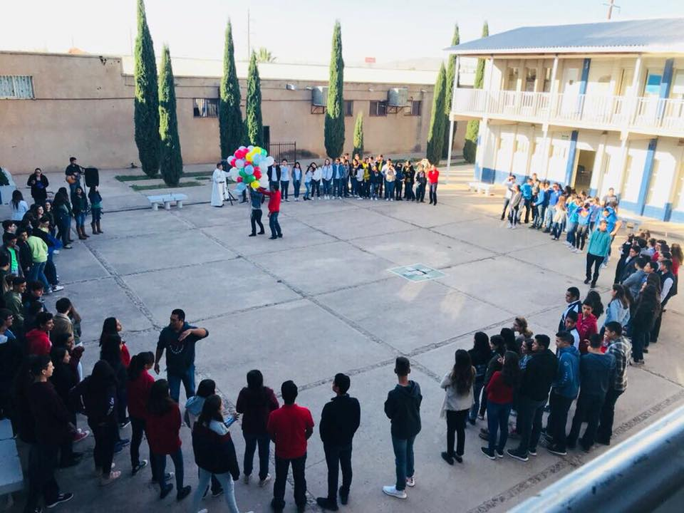
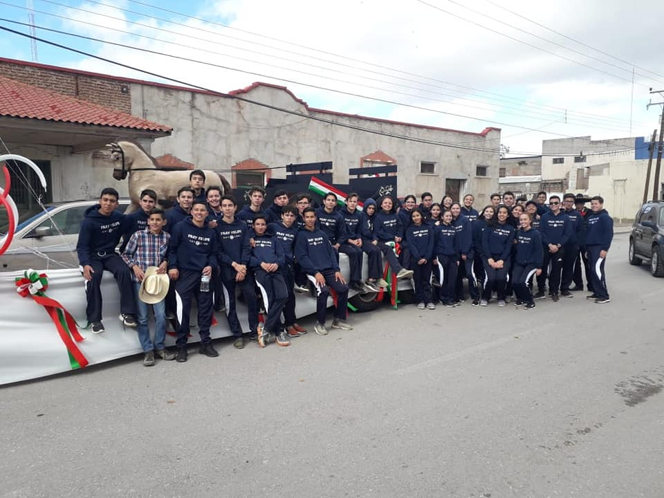
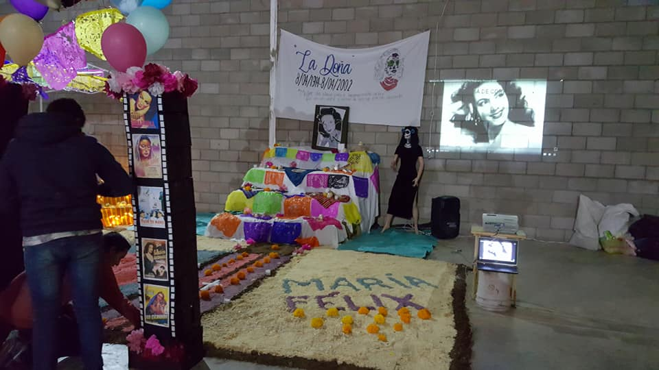
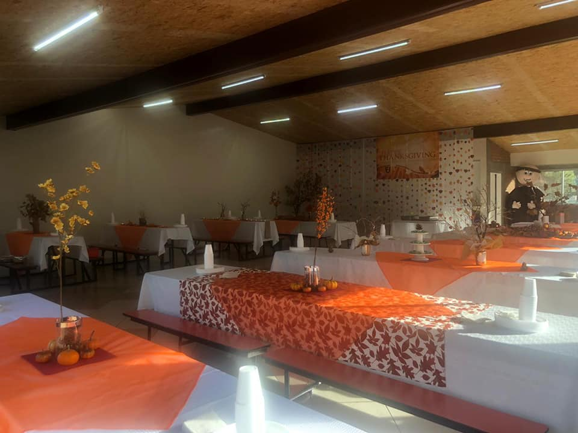

NOSOTROS

1COLEGIATURA
Pago de inscripción del Semestre Febrero- Junio $2,900 vence el día 25 de Enero 2021.
Colegiatura del mes de Febrero $2,550 vence el día 10 de Febrero.
Anexo datos de los métodos de pago
1.- Efectivo o Cheque en ventanilla escolar horario de oficina de Lunes a Viernes de 8:00a.m. a 1:00 p.m.
2.- Transferencia bancaria:
A nombre de: PROMOCION DESARROLLO EDUCATIVO Y CULTURAL DE NUEVO CASAS GRANDES A.C.
NUMERO DE CUENTA
BANCO SANTANDER SERFIN...
65501784126
CUENTA INTERBANCARIA (PARA PAGOS POR INTERNET)
014168655017841263
Enviar comprobante de pago al correo siguiente: finanzasfrayncg@outlook.es
3.-Tarjeta débito y crédito en ventanilla escolar horario de oficina de Lunes a Viernes de 8:00a.m. a 1:00p.m.
Tarjeta de Crédito 2.03% sobre el monto total a pagar.
Tarjeta de Débito 1.53% sobre el monto total a pagar.
2BECAS
Se Lanza la convocatoria a la comunidad estudiantil de las becas para el ciclo escolar 2021-2022, los interesados ingresar a plataforma Moodle al apartado AVISOS PARA PADRES DE FAMILIA e imprimir la solicitud de becas correspondiente.
día 26 febrero 2021: : Fecha limite sin excepción de personas para la recepción de documentos los cuales deberán ser depositados en la urna colocada en la oficina de finanzas de la escuela en un horario de lunes a viernes de 8:00 a.m. a 1:00 p.m.
día 28 de Mayo 2021: se informará a los padres que solicitaron beca sobre la respuesta que obtuvieron por medio de correo electrónico.
HISTORIA

El 7 de Julio de 1977 se crea la Prelatura de Nuevo Casas Grandes, bajo la dirección pastoral del Sr. Obispo D. Hilario Chávez Joya.
Una de sus preocupaciones fue la del establecimiento de una escuela que tuviera una orientación católica para beneficio de los jóvenes de la región.
Para esto se invitó a varios padres de familia a formar un equipo para el establecimiento de la escuela. Se nombró como responsable al Dr. Salvador Bautista Vargas y otras personas que participaron fueron:
- Sr. Arturo Pliego Flores.
- Sr. Fernando Salgado Servin.
- Sr. Enrique Castillo Parra.
Faltaba invitar a una persona que hubiera realizado estudios de Normal Superior y titulado para encargarlo de la dirección, tal requisito lo cumplía el Lic. Rafael Casillas Martínez.
MISIÓN
Dedicados a preparar a nuestros alumnos para que sean unos profesionistas que esten dedicados a ayudar para bien a la comunidad, y brindarle sus servicios a quien lo necesite.VISIÓN
Un Colegio que considere al alumnado el centro de toda su acción educativa, ayudándole a ser el protagonista activo de su proceso formativo.Un Colegio que favorezca la formación integral del alumnado contando con su diversidad, fomentando el espíritu de superación, cooperación, respeto, solidaridad, creatividad y sentido de la trascendencia.
Un Colegio reconocido socialmente por su calidad académica y educativa, por su orientación a resultados, por su innovación constante, su apertura a la sociedad y por la apuesta decidida por los valores que derivan del Ideario.
Un colegio al servicio de las familias y comprometido con la mejora continua en una gestión de calidad.
Un Colegio donde los miembros religiosos y laicos del Equipo Educativo asuman su responsabilidad en misión compartida, se desarrollen vocacional y profesionalmente, identificándose con el Ideario y el Proyecto Educativo del Centro en continua innovación educativa.
Un Colegio que garantice su sostenibilidad económica generando los recursos necesarios para su funcionamiento.
VALORES
Respeto a la persona por su dignidad humana, sin discriminación por causa alguna. Preocupación por cada alumno en su momento evolutivo, atendiendo a su singularidad y respondiendo a sus necesidades Apertura a las necesidades del entorno y del mundo, provocando el compromiso solidario. Calidad en la transmisión de los conocimientos que permita una sólida base académica, aplicando una pedagogía adecuada. Buen gusto y buenas maneras en el trato de las personas y el cuidado de las cosas.GALERIA
- 
- 
- 
- 
- 
- 
EXPERTOS EN:

EDUCAR

SERVICIO
EDUCAR